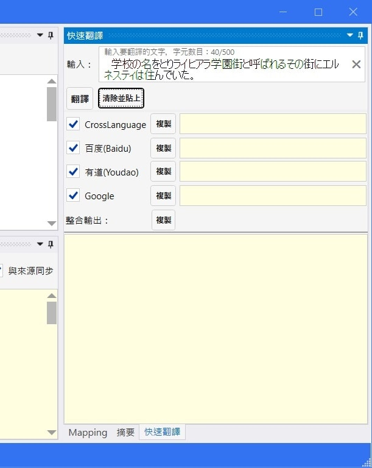

Minax Web Translator 程式並非翻譯器。僅是個遠端翻譯器或翻譯服務的代理者與對應文字替換器罷了。 其工作運作原理是依靠一些線上網站與 APIs，比如說Excite、CROSS-transer、Weblio、Baidu、Youdao、Google、Microsoft/Bing等等。
可拖拉與停駐的面板

可隱藏面板

專案新建、開啟、儲存、關閉和最近使用專案

翻譯器
此為本程式的主要功能，主要是用來翻譯較長的文章
第一步： 開啟或建立一個翻譯專案
第二步： 選擇想採用的翻譯器（選單 → 翻譯器）
第三步： 建立或調整位於 Mapping 面板的某些 Mapping 條目
第四步： 在來源面板的輸入框填入一些文字
第五步： 點擊目標面板的翻譯鍵

這是個簡化的快速翻譯功能，主要是用來翻譯一小段文字， 因此輸入框可輸入文字長度被限制最長500個字。

基本用法類似主要的翻譯功能，除此之外還可以選擇多個翻譯器來同時翻譯一小段文字。 而「整合輸出」框則是將所有勾選的翻譯器輸出整合在一起。


本程式有許多不同的翻譯器或是翻譯服務可供選擇。 但是，Android 版則是由於作業系統的限制僅能提供較少選擇。
除此之外，並非所有翻譯引擎可以支援任何來源語言和目標語言的翻譯。 因此，我只有在 App 選項中放上2個來源語言和2個目標語言，這是因為我比較熟習這些語言。
選擇翻譯器的規則很簡單：
如果你看不懂我在說些什麼，你可以多方嘗試每個引擎來找出最適合你用的引擎。
本程式基本上非常依賴遠端網路翻譯服務，不管是經由網頁或是網路 API。 沒有任何程式可以保證遠端服務永遠在線或是一直可用，這是因為網路和服務可用性是非常依靠使用者環境的。
因此，當你在翻譯時遇到某些問題時，第一件事就是檢查你的環境並重試。 有時候，那只是因為網路延遲所造成的。 也許在重試操作後，就可以重新運作了。
除了網路問題之外，仍有許多狀況會造成操作失敗。
其中之一就是服務提供者改變了他們的 HTML 程式。另一個則是他們擋掉了超出流量的翻譯要求。
後者也許可以在幾個小時後重試來解決。
前者則需由程式設計師來看看發生了啥事。